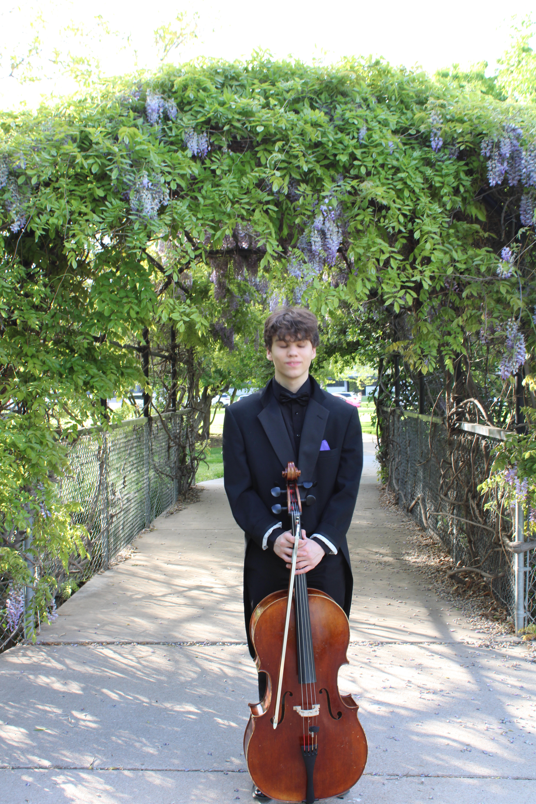

ABOUT ME
Hi, I'm Cole.
A Little About Me

I'm currently a student at Arizona State University with an interest in using data to better understand complex problems, I have a wide range of interests, but recently those involving the environment and ecology.
I enjoy being challenged and pushed further than I think I can go. I am a passionate learner and enjoy exploring new ideas.
Outside of Academics
While I love exploring the world through analysis and data, there is also a need for me to balance those parts of my life with creative pursuits. A couple of these are photography and writing poetry. Both have become ways for me to slow down, pay attention to the world in a different way, and preserve moments that might otherwise disappear.
In addition to that, academically I also spend a sizable amount of time practicing and playing the cello. Which has long been a passion of mine, and yet another way for me to express myself and slow down.
In many ways, this website is a place where I can collect some of thoughts, photographs, memories, and experiences. I find that it is very important to me as many of these memories, evolutions of ideas, progress and experiences are fleeting, and I want to preserve them in a way that I can look back on them later.
A MORE PERSONAL SIDE
Cole's Calamities
If you'd like to know me beyond academics and professional work, you're welcome to explore my photography and poetry.
Explore My Creative Work →Want to get in touch? cxstanto@asu.edu